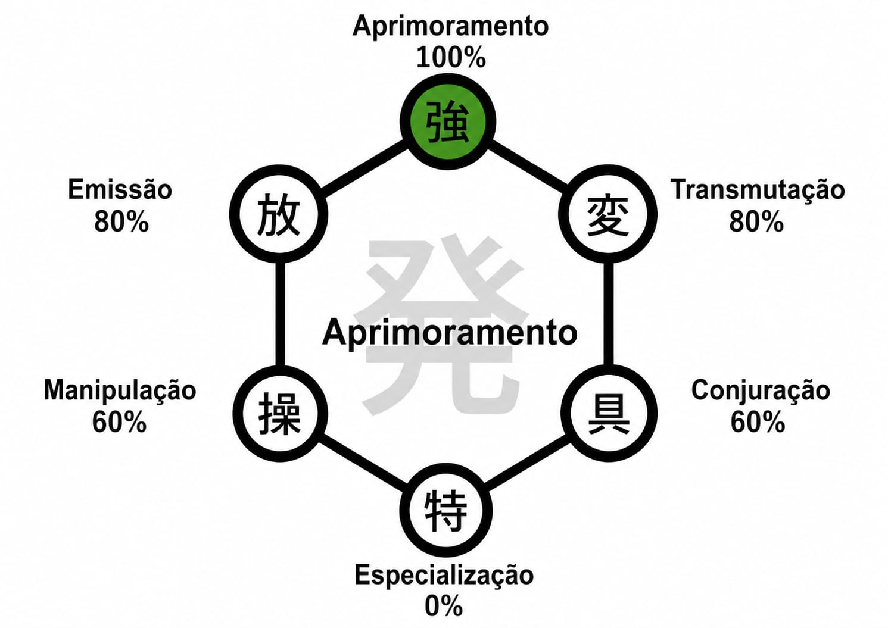
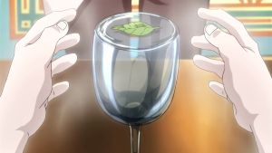

CLASSES DE NEN

É a é a habilidade de usar aura para fortalecer ou aumentar as habilidades naturais de um objeto ou do próprio corpo.
Como descobrir o tipo
A única forma garantida de determinar o tipo de aura é através do teste de Adivinhação da água. Para isso é necessário que se flutue uma folha sobre um copo d'água. Um estudante de Nen colocará as mãos ao redor do vidro e focar uma quantidade maior de aura nas mãos. O efeito resultante da aura de alguém em contato com o vidro identifica o tipo de aura da pessoa.

- Aprimorador: O volume da água vai mudar;
- Emissor: Mudará o sabor da água;
- Transmutador: A cor da água vai ser alterada;
- Manipulador: A folha vai mudar de posição;
- Conjurador: A aguá vai conter impurezas;
- Especialista: Caso ocorra qualquer outra alteração, diferente das anteriores;